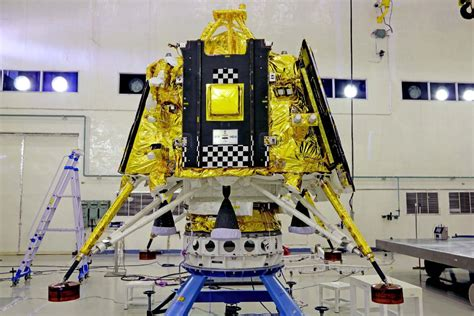
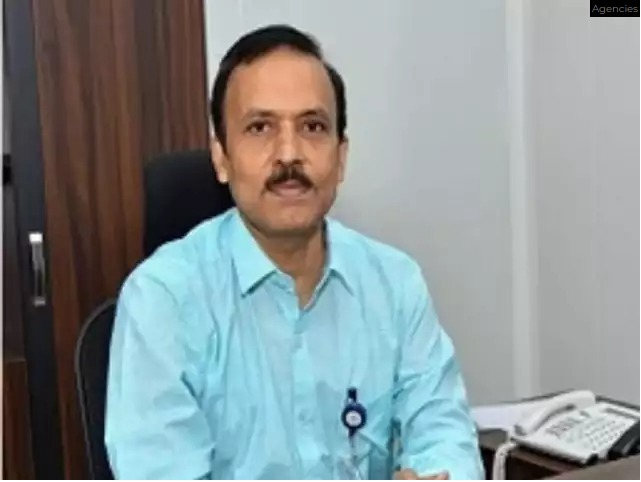

Project Images


Chandrayaan-3 is the third mission in the Chandrayaan programme, a series of lunar-exploration missions developed by the Indian Space Research Organisation (ISRO). Launched on 14 July 2023, the mission consists of a lunar lander named Vikram and a lunar rover named Pragyan, similar to those launched aboard Chandrayaan-2 in 2019. Chandrayaan-3 was launched from Satish Dhawan Space Centre on 14 July 2023. The spacecraft entered lunar orbit on 5 August, and the lander touched down near the Lunar south pole on 23 August at 18:03 IST (12:33 UTC), making India the fourth country to successfully land on the Moon, and the first to do so near the lunar south pole. On 3 September the lander hopped and repositioned itself 30–40 cm (12–16 in) from its landing site. After the completion of its mission objectives, it was hoped that the lander and rover would revive for extra tasks, on 22 September 2023, but missed the wake-up call. On September 30, the second lunar night began, eliminating hopes of revival. ISRO's mission objectives for the Chandrayaan-3 mission are:
S. Somanath, ISRO Chief Sreedhara Panicker Somanath (born July 1963) is an Indian aerospace engineer serving as the chairman of the Indian Space Research Organisation (ISRO). On 23 August 2023, he as ISRO chairman spearheaded the soft landing of Chandrayaan-3 on the South Pole of the lunar surface along with other notable senior ISRO scientists. The lander named Vikram and the rover named Pragyan landed near the lunar south pole region on 23 August 2023 at 18:04 IST, making India the first country to successfully land a spacecraft near the lunar south pole and the fourth country to demonstrate soft landing on the Moon.
Mohana Kumar, Mission director Mohana Kumar, the mission director of Chandrayaan-3 has worked as the director for the successful commercial launch of the One Web India 2 satellites on board the LVM3-M3 mission.
S Unnikrishnan Nair, VSSC director Dr. S. Unnikrishnan Nair, Director, Vikram Sarabhai Space Centre, was involved in the development of various aerospace systems and mechanisms for Indian rockets - PSLV, GSLV and LVM3. As founding Director of the ISRO's Human Space Flight Centre (HSFC) Unnikrishnan has led the team for Gaganyaan Project and established the Astronaut Training Centre at Bangalore in HSFC at Bangalore. (Image: VSSC website)
